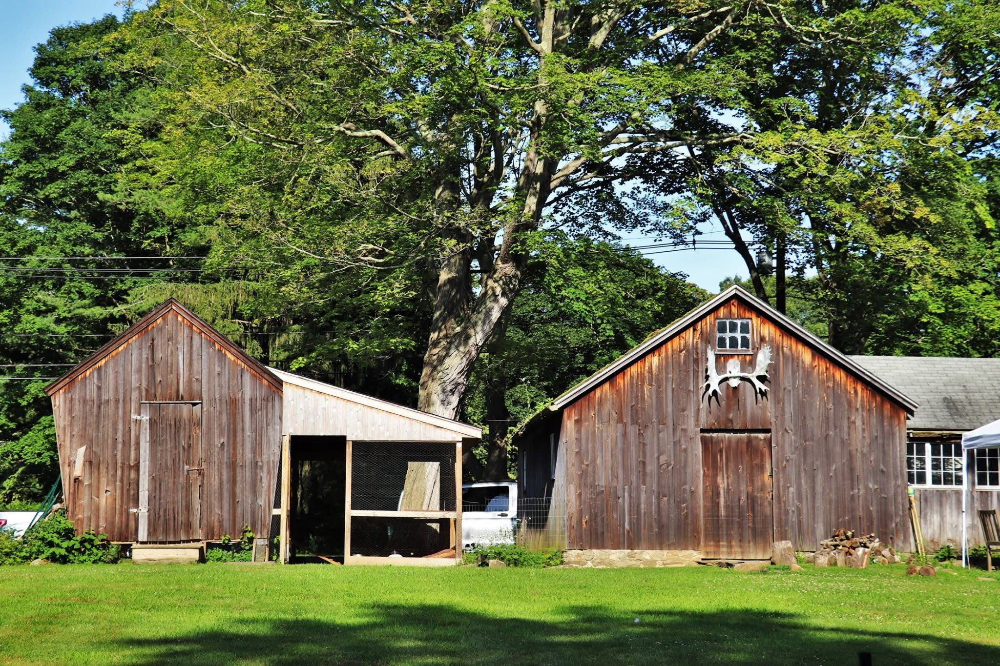
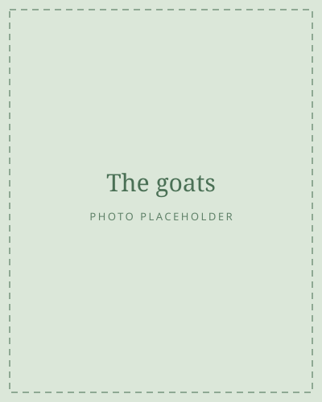
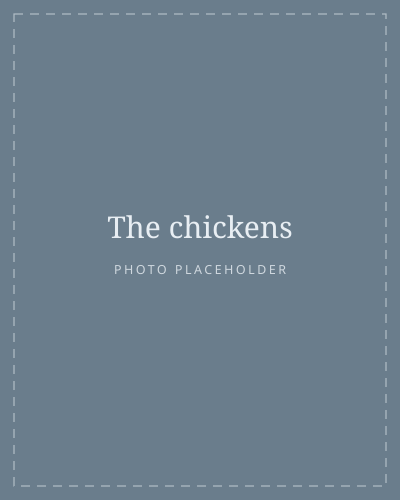
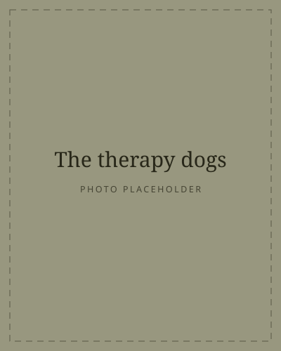

LGBTQ+ sober living on the Connecticut shoreline
Recovery that doesn't ask you to hide.
Extended sober living on a two-hundred-year-old working farm.
Most programs will accept you. That is not the same as being built for you.
Who comes here
Some of this may sound like you.
- You've been through treatment before, and something about it never quite fit.
- You're sober, or nearly, and going back to your old routine feels like a risk.
- You want somewhere you can be yourself without explaining yourself.
- You're worried about someone you love and don't know where to begin.
You don't have to be certain, or ready, to start a conversation. See how the program works →
The farm
There is work here that needs doing.
Animals don't wait until you feel like it. That turns out to matter.

The goats
Loud, opinionated, and entirely uninterested in how your day is going.

The chickens
Morning rounds, eggs collected, a reason to be outside before the day starts.

The therapy dogs
They sit with people on the hard days, which is most of what anyone needs.
Clinical leadership
A licensed therapist on site, involved in the clinical lives of the people who live here.
Long enough to matter
Six months, not twenty-eight days. Recovery is built in the year after treatment ends.
A day with a shape
Animals fed, meals cooked together, structure you can practise before you need it alone.
Talking to us
Let's find the right program for you.
The first conversation is free, and it is not a sales call. We'll talk through where you are and what would actually help. If Wildwood isn't the right fit, we'd rather tell you that.